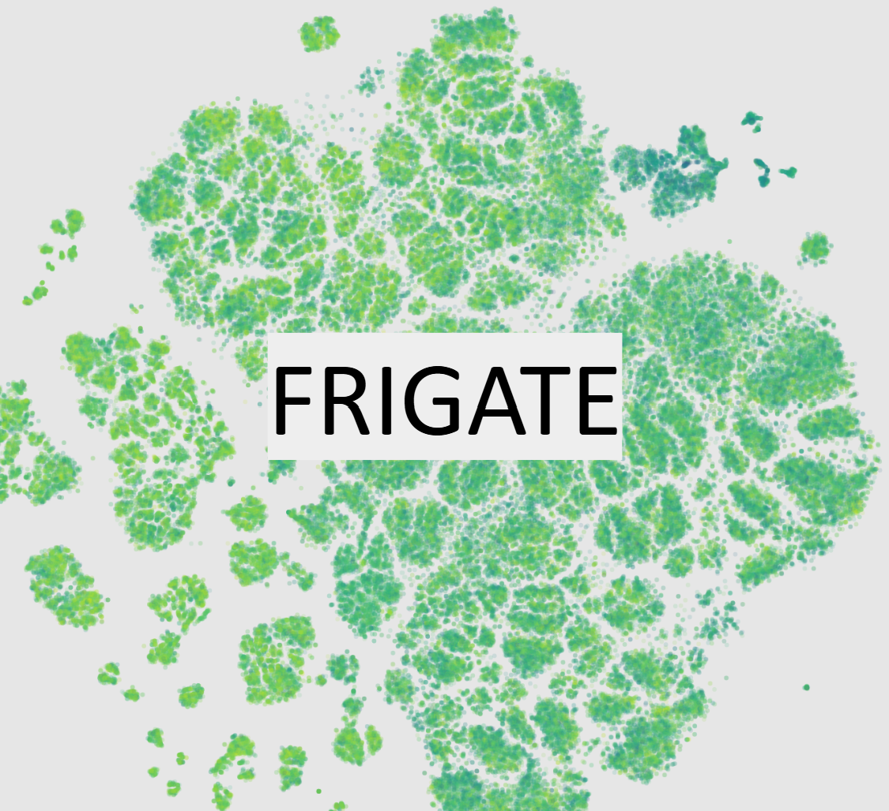

BBHBot provides a cohesive software infrastructure to automate the search for transient optical flare counterparts to the gravitational wave messengers of merging black holes. These automations include (1) automatic triggering of the Zwicky Transient Facility (ZTF) to observe promising gravitational wave candidates, and (2) continuous tracking and updating of ZTF forced photometry for candidate active galactic nucclei (AGN) hosts, and (3) a data-driven heuristic to select candidate anomalous optical flare counterparts. This follow-up program ran through the LIGO O4 observing run. View Project on GitHub
 FRIGATE conducts a meta-analysis of all science filters applied to the ZTF alert stream, with the goals of helping the community to build more efficient and interpretable filters, and to search for interesting objects in the gaps between filters. For this project we experiment with many visualization techniques for large and high-dimensional data, including Sankey flow charts and t-SNE plotting. View Project on GitHub